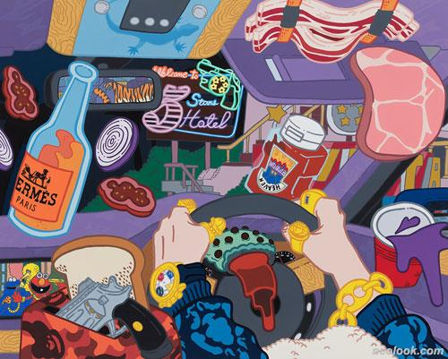
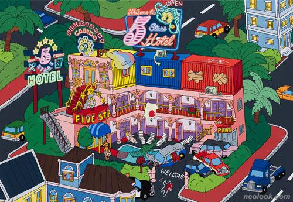

유용선
주장
- 공간은 우리가 인지하거나 사고하는 범위 내에서 그 의미와 경험이 만들어진다. 공간은 개념만으로 그 의미가 이해될 수 있다. 공간은 실제로 경험되지 않은 어떤 곳이다.
- 장소는 경험을 바탕으로 이루어지는 공간이다. 개념적인 존재였던 그 공간이 내가 실제로 겪게 되면서, 이제는 '그 곳'으로 바뀌게 된다.
- 내가 겪은 공간은 바로 내가 나의 행동을 결정할 수 있는 실질적인 공간이 될 수 있는 것.
무엇을
>>오성급 호텔
어떻게
>>유용선 작가의 호텔엔, 우리가 찾아왔던 수 없이 많은 시간 동안 찾아왔던 바램들과 누군가에게 보여주고 싶었던 욕망들이 적나라하게 드러나 있다.
왜
>>우리가 살아가고 있는 일상에서 찾고자 하는 나의 그 무엇. 그것이 돈이 되었든, 사람이 되었든. 그 욕망이 얼마나 다양하게 캐릭터로 드러날 수 있을까에 대한 캐릭터의 놀이터인 것이다.
작가는 세상에서 가장 아름다운 음식의 재료를 찾고자 했고, 그 재료로 우리가 쉬어 갈 수 있는 호텔의 기초를 만들었다면… 그렇다면, 우리는, 그 호텔에서 무엇을 즐길 수 있고, 무엇을 가지고 집으로 돌아갈 수 있을지.

-유용선_Welcome to 5 stars hotel_캔버스에 아크릴채색_130.3×162.2cm_2021

-유용선_5 stars hotel view map_캔버스에 아크릴채색_112.1×162.2cm_2021